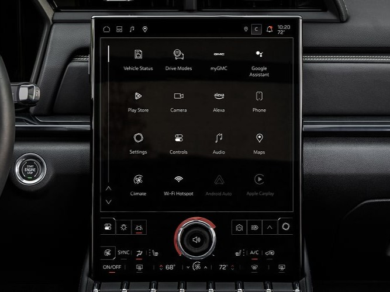
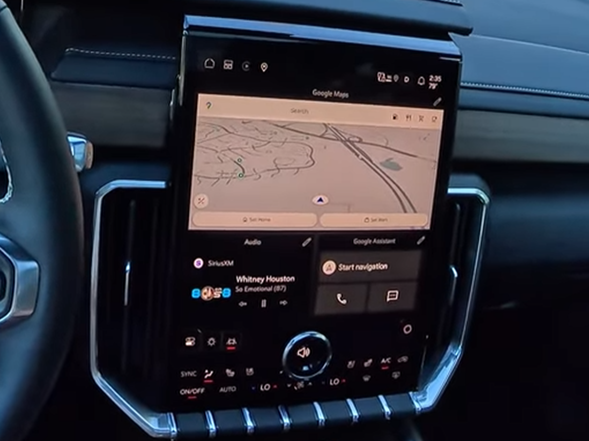
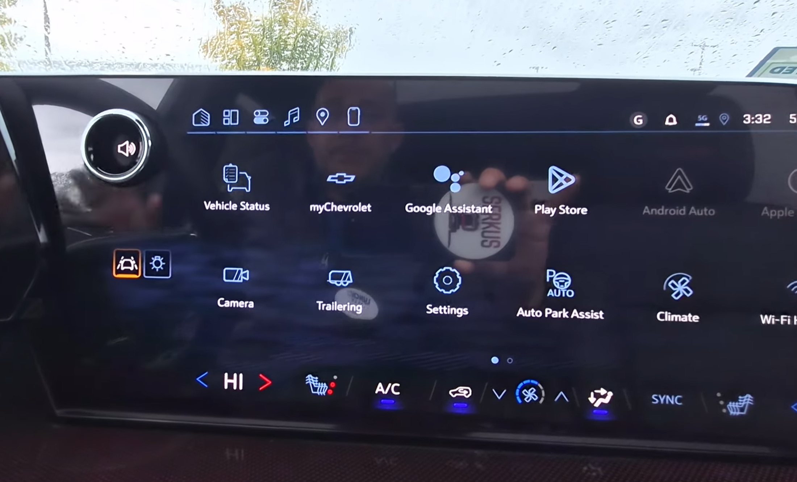
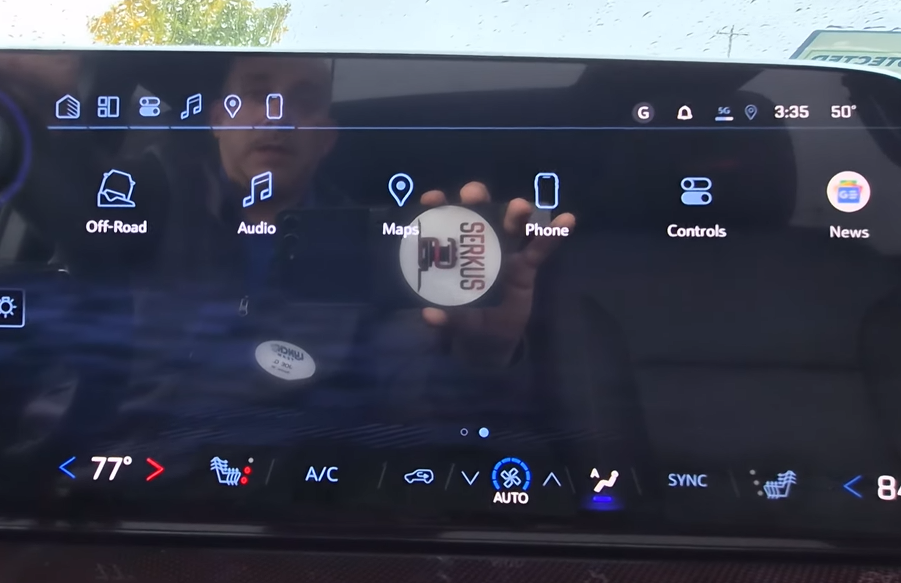
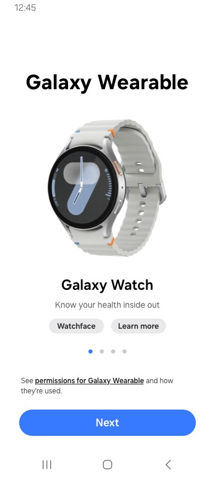
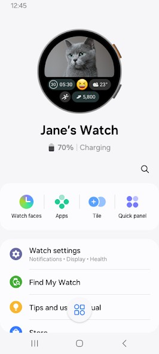
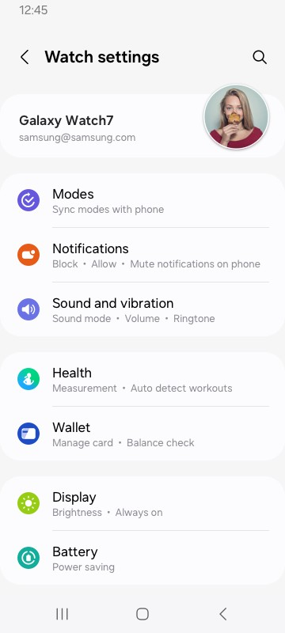
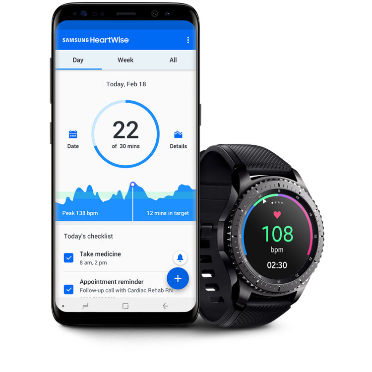

Selected work and deeper technical notes
This page expands on the “Featured Work” section. Some items are constrained by confidentiality, so I focus on architecture, responsibilities, and outcomes rather than proprietary specifics.
Disclaimer
All demo images and videos are sourced from publicly available materials (e.g., YouTube, manufacturer websites) and are used for illustrative purposes only. They do not represent proprietary or confidential implementations.
GM Infotainment - HomeScreen
Core in-vehicle HomeScreen experience built on Android Automotive OS. Work included architecture modernization, module ownership, and stability/performance improvements.
What I owned
- Led the Launcher module and contributed to Split-View (Task View-private API).
- Drove Clean Architecture refactoring to improve maintainability and testability using MVVM, Kotlin Coroutines and Flow, Room database and Dagger/Hilt DI.
- Supported platform/app build integration (Soong + developer-friendly Gradle).
Tech highlights
- AAOS / AOSP integration points, lifecycle & system events.
- Modular structure, clear boundaries, dependency direction control.
- Performance and stability work for legacy components.
Testing & quality
- Unit + UI testing practices to reduce regressions.
- Code reviews and mentorship with quality guardrails.
- CI validation gates to keep mainline stable.
Platform upgrade
- Migration from Android S to Android U (Soong + Gradle paths).
- Compatibility checks and iterative fixes across release cycles.
Tooling & practices
- MockK / JUnit for unit testing; Espresso for UI testing.
- Build + test automation integrated into developer workflow.
- Quality checks (reviews, static analysis where applicable).
Results
- Released to production: millions owners of newer-GMC car models (GMC, Hummer, Cadillac and Chevy) are using the app
- Improved Unit test coverage 80%+, build time to less than 5 minutes.






Samsung Galaxy Wearable Manager
Built and shipped backup/restore capabilities for a large-scale consumer Android app used to manage Galaxy Wear devices. Focus on UX reliability, data integrity, and maintainable architecture.
What I delivered
- Designed and implemented backup/restore feature end-to-end.
- Integrated REST APIs and Android Architecture Components.
- Ensured maintainability with clear separation of concerns (MVVM).
Testing & quality
- Unit and UI testing (JUnit / Mockito / Espresso).
- Stability and bug fix iterations across releases.
Impact
- Reliability for user data workflows (restore correctness matters).
- Reduced user friction during device migration/upgrade scenarios.



Samsung HeartWise
Contributed to Samsung HeartWise, a remote cardiac-rehabilitation mobile solution developed by Samsung Research America in collaboration with Kaiser Permanente. Implemented patient-facing workflows for daily routines and vital measurement logging (e.g., blood pressure, blood glucose) using React Native.
What I contributed
- Built and maintained screens to display patient condition and daily routine.
- Implemented measurement entry flows (e.g., blood pressure, blood glucose).
- Improved stability and maintainability through iterative enhancements and bug fixes.
Engineering highlights
- Cross-platform UI implementation with React Native components and navigation patterns.
- User-friendly data entry for health measurements.
- Attention to reliability for user workflows where correctness matters.
